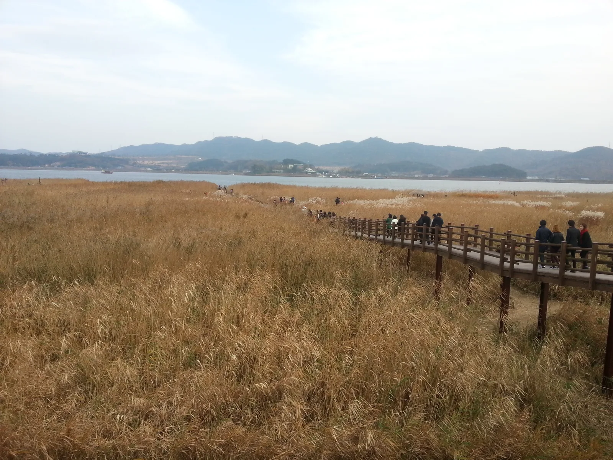
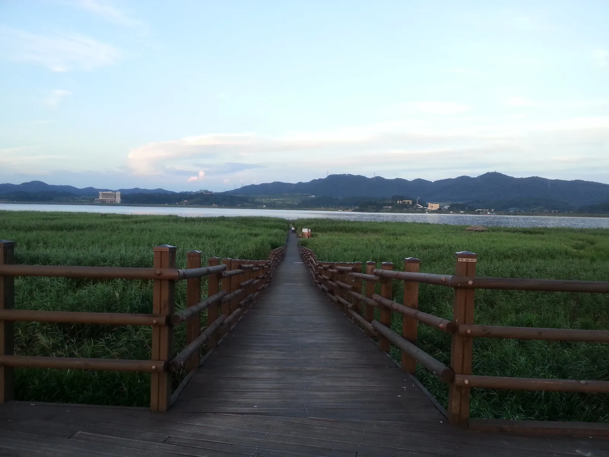
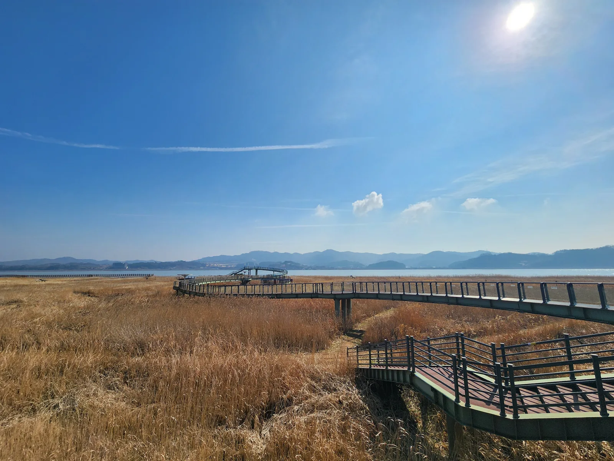
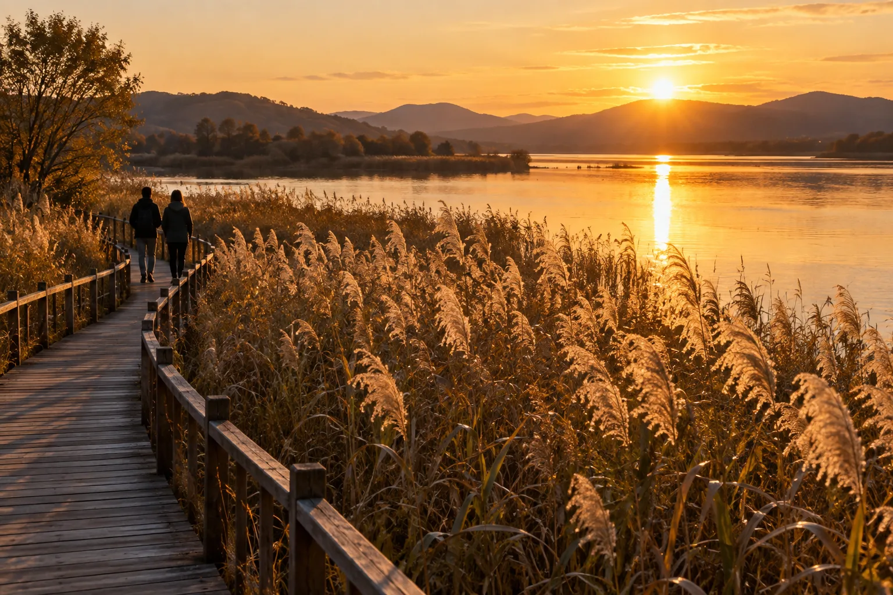
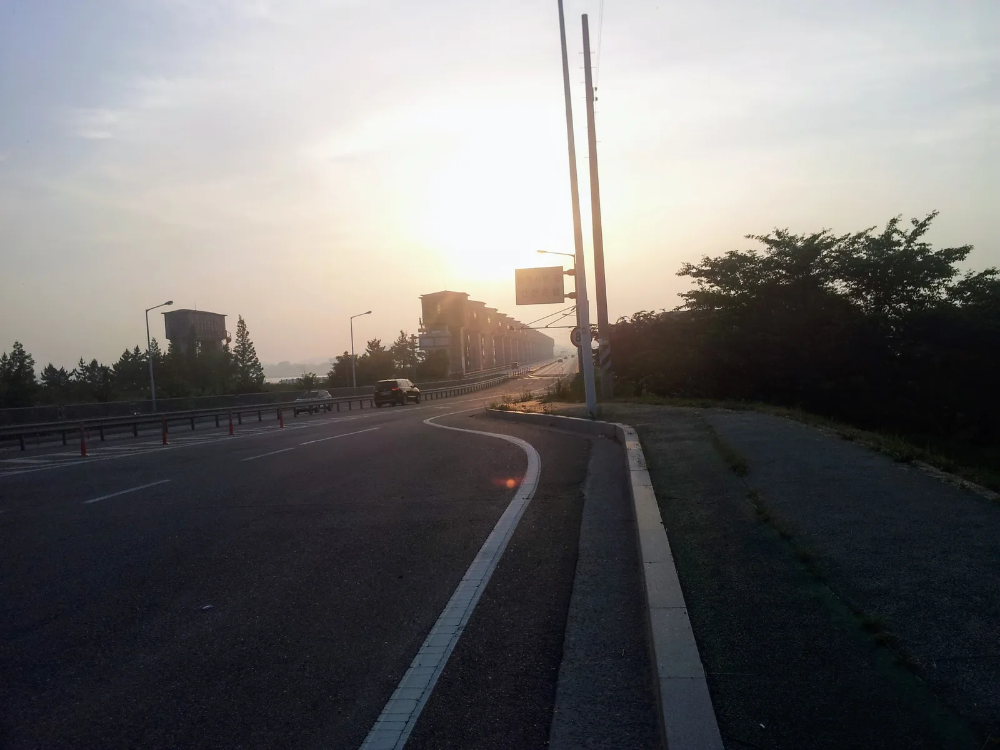
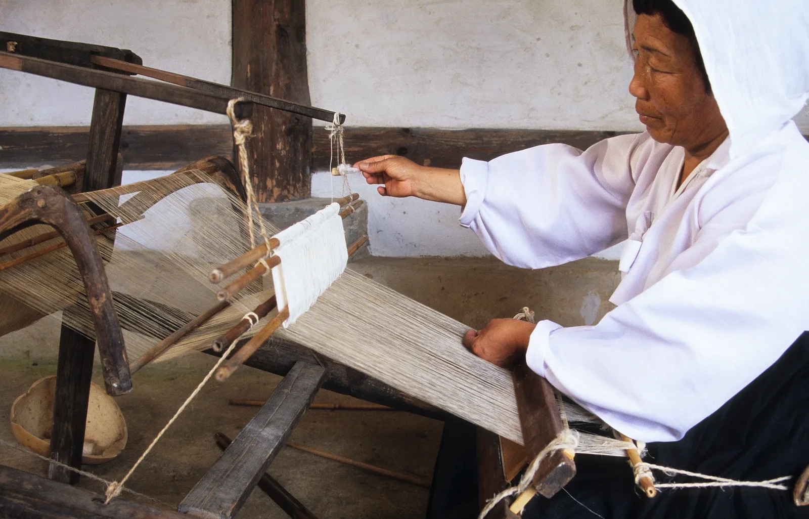
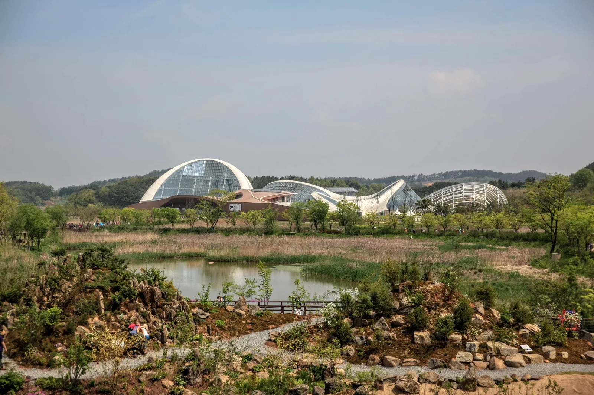
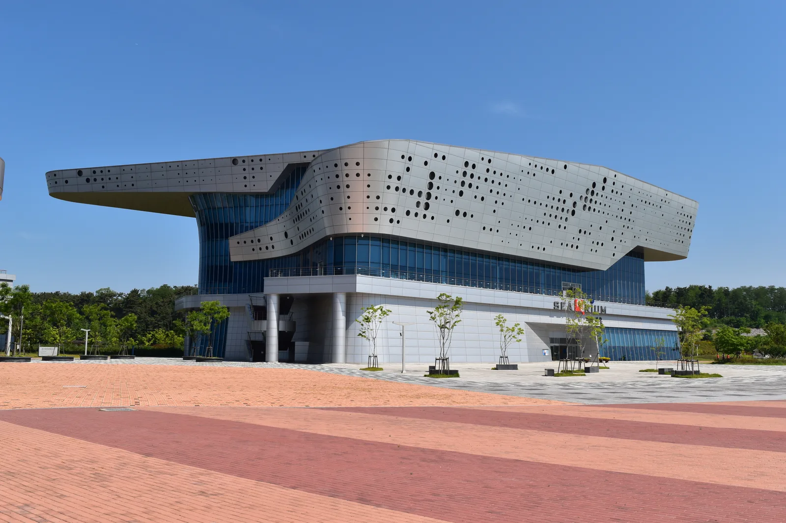
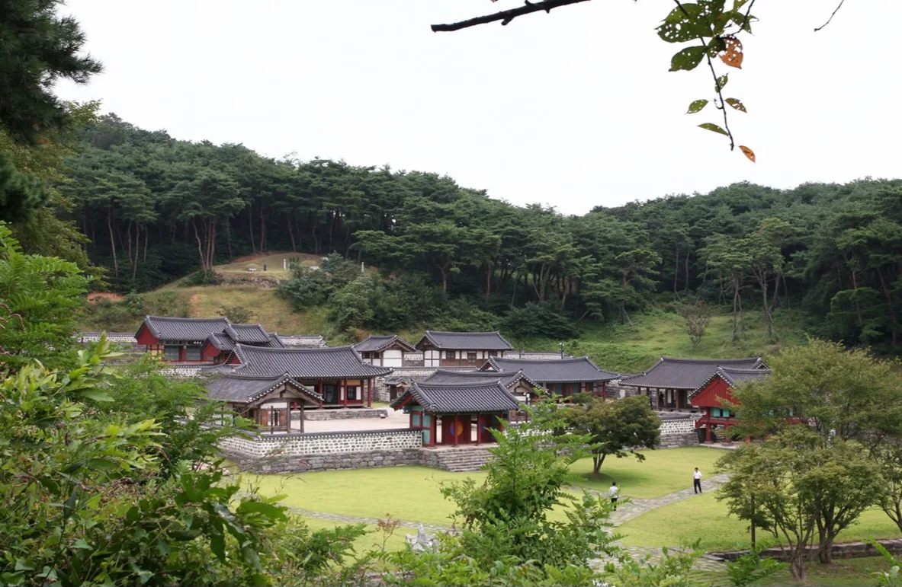
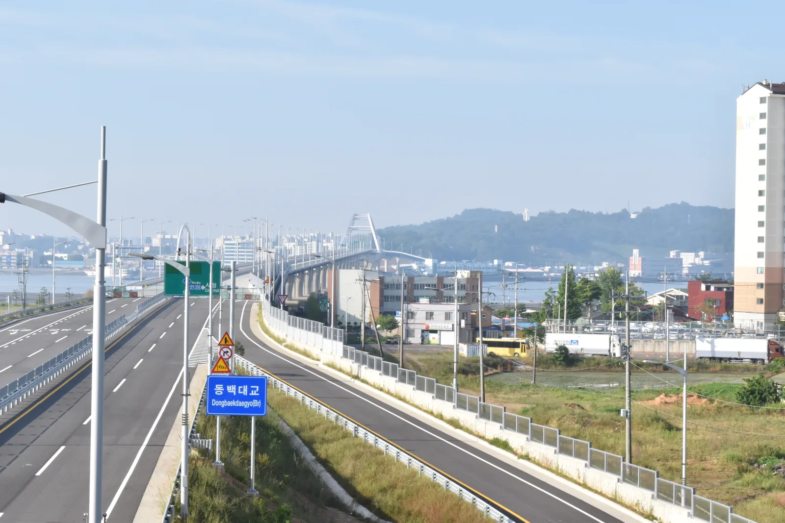

▲ 가을 신성리 갈대밭. 갈색으로 마른 갈대 사이로 데크길이 이어지고, 그 너머로 금강이 흐른다 사진=Wikimedia Commons (Shinfull, CC BY-SA 4.0)
1. 왜 신성리 갈대밭인가
충남 서천군 한산면 신성리 갈대밭은 금강변을 따라 폭 200m, 길이 약 1km, 총면적 25만㎡(250,000㎡)로 펼쳐진 갈대밭이다. 서천군 문화관광 안내에 나온 수치로, 다른 자료에는 23만㎡·22ha 등 조금씩 다른 면적이 보이지만 여기서는 군의 공식 수치를 따른다. 서천군은 이곳을 '서천9경' 가운데 하나로 꼽고, 우리나라 4대 갈대밭 중 하나이자 한국관광공사가 선정한 '한국 갈대 7선'으로 소개한다. 영화 '공동경비구역 JSA'를 비롯해 드라마 '추노', '자이언트', 넷플릭스 시리즈 '킹덤'이 이곳에서 촬영됐다. 매표소도, 폐장 시간도 없다. 충남관광은 이용시간을 '상시 개방', 쉬는 날을 '연중무휴'로 안내하고, 입장료와 주차료 모두 무료라고 적고 있다.
순천만처럼 바다와 맞닿은 갯벌 갈대밭과 달리, 신성리는 강 갈대밭이다. 서천군에 따르면 이 일대는 원래 민물과 바닷물이 섞이는 기수역이었지만, 금강하굿둑이 들어선 뒤 생태계가 바뀌면서 물억새가 곳곳에 자라기 시작했다. 그래서 지금은 갈대와 물억새가 한데 섞인, 다른 곳에서 보기 어려운 풍경이 만들어졌다. 강둑에 올라서면 갈대 너머로 호수처럼 넓어진 금강 하류가 한눈에 들어온다.

▲ 여름철 신성리 갈대밭. 초록 갈대 사이로 곧게 뻗은 데크길이 금강 쪽으로 이어진다 사진=Wikimedia Commons (Shinfull, CC BY-SA 4.0)
2. 가는 법·주차 — 동서천IC에서 15분 안팎
자가용이라면 내비게이션에 '서천군 한산면 신성로 500'을 입력하는 게 가장 정확하다. 수도권·충청권에서 내려올 때는 서해안고속도로와 서천공주고속도로가 만나는 동서천 분기점 인근의 동서천IC가 가장 가깝다. 공식 거리 안내는 없어 오픈스트리트맵 경로로 추정해 보면 동서천IC에서 갈대밭 입구까지 약 12km, 차로 15분 안팎이다(실제 소요시간은 교통 상황에 따라 다르다). 서천공주고속도로는 동서천 분기점~동서천IC 구간만 왕복 2차로이고, 분기점 동쪽(부여·공주 방향)은 왕복 4차로다. 전북 군산 쪽에서 온다면 금강하굿둑이나 동백대교를 건너 서천으로 넘어온 뒤 금강을 거슬러 올라가는 동선이 된다.
| 항목 | 내용 | 비고 |
|---|---|---|
| 내비 목적지 | 충남 서천군 한산면 신성로 500 | 충남관광 지번 표기 신성리 125-2 |
| 가까운 IC | 서천공주고속도로 동서천IC | 약 12km, 15분 안팎(OSM 경로 추정) |
| 주차 | 입구 주차장, 무료 | 충남관광 기준. 면수는 공식 안내 없음 |
| 입장료 | 무료 | 매표소 없음 |
| 운영시간 | 상시 개방 | 연중무휴 |
| 화장실 | 있음 | 장애인 화장실은 없음(열린관광 안내) |
| 입구 시설 | 신성리갈대농경문화체험관 | 지상 2층 전망대에서 금강·갈대밭 조망 |
| 문의 | 서천종합관광안내소 041-952-9525 | 행정 문의 041-950-4017 |
대한민국 구석구석에 따르면 입구에 주차장과 갈대농경문화체험관이 함께 있다. 주차장에서 체험관을 지나 강둑을 넘으면 바로 갈대밭이 시작되는 구조라, 차를 세우고 오래 걸을 필요가 없다는 점이 운전자에게는 가장 큰 장점이다. 충남관광은 입장료와 주차료가 모두 무료라고 안내한다. 다만 주차장 면수는 서천군·충남관광 어느 쪽 공식 안내에도 나와 있지 않으니, 가을 주말 오후처럼 방문객이 몰리는 때라면 조금 일찍 도착하거나 서천종합관광안내소에 미리 물어보는 편이 안전하다.
교통약자와 함께라면 미리 알아둘 점도 있다. 대한민국 구석구석 '열린 관광' 안내에 따르면 이곳에는 장애인 전용 주차구역과 장애인 화장실이 없고, 주출입구에 단차가 있으며 휠체어 대여도 하지 않는다. 휠체어·유모차 동반이라면 현장 동선을 안내소에 먼저 문의하는 게 좋다.

▲ 추수가 끝난 들판 사이로 이어지는 가을 시골길 드라이브 이미지=AI 생성
🚗 운전자가 챙길 것
IC를 나온 뒤에는 고속도로가 아닌 지방도·마을길로 이어진다. 10월은 벼 수확철이라 들판 사이 도로에서 트랙터·콤바인 같은 농기계를 만날 수 있으니 추월은 시야가 트인 구간에서만 하자. 해 질 녘에 갈대밭을 보고 나오면 금방 어두워지는데, 가로등이 드문 시골길이 많으므로 전조등을 일찍 켜고 속도를 낮추는 게 좋다. 서천공주고속도로 동서천IC~동서천 분기점 구간은 왕복 2차로라 앞차 추월이 어렵다는 점도 알아두자.
3. 둘러보는 동선과 포토 스폿
갈대밭 안에는 여러 갈래의 탐방로가 나 있다. 대한민국 구석구석은 갈대소리길, 철새소리길, 하늘산책로 같은 테마 산책로를 소개하고 있다(2019년 기사 기준이라 현장 표지판과 명칭이 다를 수 있다). 충남관광에 따르면 입구에서부터 1.2km 길이의 나무 데크길이 이어져, 운동화면 충분하다. 추천 동선은 다음과 같다.
| 순서 | 지점 | 볼거리 |
|---|---|---|
| 1 | 갈대농경문화체험관 | 갈대 식생과 이 일대의 역사 소개, 2층 전망대에서 갈대밭 전체 조망 |
| 2 | 강둑 위 | 갈대밭과 금강을 한 화면에 담는 대표 구도 |
| 3 | 갈대밭 안쪽 데크길 | 키를 넘는 갈대 사이로 걷는 '미로' 구간, 인물 사진 배경 |
| 4 | 곳곳의 나무 현판 | 박두진·김소월·박목월 등 시인들의 시 |
| 5 | 금강 쪽 끝자락 | 갈대 너머 강물이 넓게 펼쳐지는 풍경, 해 질 녘 역광 촬영 |
입구 체험관에서 먼저 전망대에 오르는 걸 권한다. 대한민국 구석구석에 따르면 지상 2층 전망대에서 금강과 갈대밭 전경을 볼 수 있어, 걸어 들어가기 전에 전체 규모와 길의 모양을 파악하기 좋다. 갈대밭 안으로 들어가면 키 큰 갈대 때문에 시야가 막혀, 위에서 한 번 보고 들어가는 것과 그냥 들어가는 것은 체감이 꽤 다르다.

▲ 2024년 2월의 신성리 갈대밭. 갈대밭 위를 곡선으로 가로지르는 높은 데크길이 놓여 있다 사진=Wikimedia Commons (LR0725, CC BY-SA 4.0)
JSA 촬영지라는 이름값 때문에 영화 속 장면을 떠올리며 찾는 사람도 많지만, 결국 이곳의 주인공은 강을 따라 끝없이 이어지는 갈대밭 풍경 자체다. 갈대밭 곳곳에 세워진 나무 현판의 시를 하나씩 읽으며 걷는 것도 이곳만의 산책법이다.
4. 언제 가야 하나 — 10월, 그리고 해 질 녘
서천군은 매년 2~4월 갈대 생육촉진 프로그램을 운영하고, 5월부터 초록 갈대, 10월에는 갈색빛 갈대를 볼 수 있다고 안내한다. 충남관광은 9월부터 갈색빛 갈대를 볼 수 있다고 적고 있어, 9월 말부터 색이 오르기 시작해 10월에 절정을 맞는 흐름으로 보면 된다. 9월 말인 지금은 이삭이 막 올라오며 초록과 갈색이 섞이는 시기이고, 전면이 갈색으로 바뀐 풍경을 원한다면 10월 방문이 낫다.
시간대는 해 질 녘이 가장 좋다. 낮은 햇빛이 갈대 이삭을 뒤에서 비추면 이삭 끝이 빛을 머금어 반짝이고, 금강 수면에도 노을빛이 번진다. 한국천문연구원 일출일몰시각 기준으로 10월 중순 서천의 해넘이는 오후 6시 전후이고, 10월 말로 갈수록 5시 30분대까지 당겨진다. 방문일 일몰 시각을 미리 확인하고, 일몰 1시간 전쯤 도착해 전망대부터 돌아보는 일정을 짜면 여유롭다.

▲ 해 질 녘 역광에 빛나는 강변 갈대밭과 데크길을 걷는 사람들 이미지=AI 생성
🎪 2026년 갈대축제는?
서천군 문화관광 홈페이지의 축제 목록(2026년 9월 26일 확인)에는 동백꽃 주꾸미 축제, 한산모시문화제, 장항 맥문동 꽃 축제, 홍원항 전어·꽃게 축제 등이 올라 있지만 신성리 갈대밭 축제는 올라 있지 않다. 올해 갈대밭 행사 일정은 공식 발표를 확인하지 못했으니, 행사를 기대하고 간다면 서천종합관광안내소(041-952-9525)에 먼저 문의하자. 행사가 없어도 갈대밭은 상시 개방이다.
강바람도 고려해야 한다. 강변의 탁 트인 평지라 해가 지면 체감온도가 빠르게 떨어지므로 10월이라도 바람막이 하나는 챙기는 편이 좋다. 겨울에는 또 다른 볼거리가 생긴다. 대한민국 구석구석은 겨울이면 40여 종의 철새가 이곳으로 모여든다고 소개하고, 서천군은 금강하굿둑부터 신성리 갈대밭에 이르는 금강하구 일대를 철새 서식지로 안내한다. 대한민국 구석구석은 금강하굿둑 일대를 일출과 일몰 전후에 둘러보기 좋다고 소개하는데, 군산 쪽에서 하굿둑을 건너 들어오는 길이라면 오가는 길에 들러볼 만하다.

▲ 해 질 녘의 금강하굿둑 도로. 수문 구조물을 따라 서천과 군산을 잇는다 사진=Wikimedia Commons (Ryuch, 퍼블릭 도메인)
5. 함께 묶을 곳 — 한산모시관·국립생태원·장항스카이워크
신성리 갈대밭은 서천 동쪽 끝 한산면에 있어, 서쪽 금강하구 쪽 명소들과 묶으면 하루 동선이 자연스럽게 나온다. 아래 거리·시간은 오픈스트리트맵 경로 기준 추정치이고, 운영 정보는 각 기관 공식 안내에서 확인한 내용이다.
| 명소 | 갈대밭에서 | 운영시간 | 요금·휴무 |
|---|---|---|---|
| 한산모시관 | 약 6.5km, 10분 안팎 | 3~10월 10:00~18:00 / 11~2월 10:00~17:00 | 관람 무료, 설·추석 명절 휴무 |
| 문헌서원 | 약 10km, 15분 안팎 | 방문 전 확인 | 문의 041-953-5895 |
| 국립생태원 | 약 22km, 25분 안팎 | 09:30~17:30(종료 1시간 전 매표 마감) | 어른 5,000원, 월요일 휴관(공휴일이면 다음 첫 평일) |
| 장항스카이워크 | 약 26km, 30분 안팎 | 방문 전 확인 | 입장료 4,000원(2,000원은 서천사랑상품권 환급), 월요일·설·추석 휴무 |
한산모시관은 같은 한산면 안에 있어 가장 가깝다. 한산모시의 역사와 문화를 소개하는 곳으로, 관람은 무료다. 문화관광해설사 안내와 모시짜기 체험은 전화(041-951-4100)로 예약할 수 있고, 체험은 최소 1주일 전에 신청해야 한다.

▲ 국가무형유산 한산모시짜기 기록 사진(2003년, 충남 서천). 전통 베틀에서 모시 실을 잇는 장면이다 사진=국가유산청 국립무형유산원 (공공누리 제1유형, Wikimedia Commons)
국립생태원은 서천군 마서면 금강로 1210에 있다. 서천군에 따르면 대표 시설인 에코리움은 열대관·사막관·지중해관·온대관·극지관의 5대 기후대 온실로 꾸며져 있다. 운전자에게 반가운 점은 주차장 규모다. 국립생태원 안내에 따르면 소형 978대, 버스 22대 등 총 1,000대를 댈 수 있다. 입장료는 어른 5,000원, 청소년 3,000원, 어린이 2,000원이고 카드 결제만 된다. 서천군민 50% 할인, 국립해양생물자원관 당일 입장권 소지자 30% 할인 같은 규정도 있다. 월요일은 휴관이니 주말 여행이라면 일요일에 넣는 게 안전하다.

▲ 습지 정원 너머로 보이는 국립생태원 에코리움 사진=Wikimedia Commons (Bongsun, CC BY-SA 4.0)
장항스카이워크(기벌포 전망대)는 장항송림자연휴양림 안에 있다. 서천군에 따르면 1954년 장항농고 학생들이 심은 곰솔(해송) 1만 2천여 그루가 숲을 이루고, 그 위로 높이 15m, 길이 236m의 스카이워크가 놓여 서해와 갯벌을 내려다볼 수 있다. 앞바다는 676년 신라가 당나라 수군을 물리친 기벌포 해전의 무대이기도 하다. 입장료는 2024년 8월부터 4,000원으로 올랐고, 이 중 2,000원은 서천사랑상품권으로 돌려준다. 주차장이 있으며 월요일과 설·추석에는 쉰다. 바로 옆 국립해양생물자원관의 전시관 씨큐리움과 묶기도 좋다.

▲ 장항송림 인근 국립해양생물자원관 전시관 '씨큐리움' 사진=Wikimedia Commons (Jjw, CC BY-SA 4.0)
서천 서쪽 해안까지 내려갈 여유가 있다면 제철 수산물로 유명한 홍원항도 선택지다. 가을 전어·꽃게 시즌과 포구 정보는 서천 홍원항 전어·꽃게 가이드에 정리해 두었다. 다른 지역 갈대 명소와 비교해 보고 싶다면 순천만 갈대축제 절정기 방문 팁도 참고할 만하다.
6. 하루 코스로 정리하면
갈대밭의 가장 좋은 시간이 해 질 녘이니, 코스는 서쪽(장항)에서 시작해 동쪽(한산)으로 끝나게 짜는 게 효율적이다. 오전에 장항스카이워크와 송림을 걷고, 점심 무렵 국립생태원으로 이동해 에코리움을 둘러본다. 오후 3~4시쯤 한산면으로 넘어와 한산모시관(동절기 전에는 오후 6시까지 운영)을 보고, 일몰 1시간 전에 신성리 갈대밭에 도착해 전망대→강둑→데크길 순으로 걸으며 해넘이를 맞는 식이다. 국립생태원이 쉬는 월요일에는 국립생태원 대신 같은 한산·기산 권역의 문헌서원을 넣으면 된다. 오픈스트리트맵 추정으로 갈대밭에서 차로 15분 안팎 거리이고, 운영시간은 공식 안내를 찾지 못했으니 방문 전 전화(041-953-5895)로 확인하자.

▲ 소나무 숲 아래 자리한 서천 문헌서원 사진=한국학중앙연구원·유남해 (공공누리 제1유형, Wikimedia Commons)

▲ 서천 장항과 전북 군산을 잇는 동백대교 진입로. 군산 쪽에서 서천으로 넘어올 때 이용할 수 있다 사진=Wikimedia Commons (Jjw, CC BY-SA 4.0)
7. 방문 전 체크리스트
✅ 출발 전 확인할 것
· 내비 목적지는 한산면 신성로 500, 가까운 IC는 서천공주고속도로 동서천IC
· 입장료·주차료는 무료(충남관광), 주차 면수는 공식 안내 없음 → 주말엔 일찍 도착하거나 서천종합관광안내소(041-952-9525)에 확인
· 장애인 전용 주차구역·장애인 화장실 없음, 주출입구 단차 있음(열린관광 안내)
· 갈대 절정은 10월, 방문일 일몰 시각을 미리 확인하고 1시간 전 도착
· 2026년 갈대밭 행사 일정은 공식 발표 미확인 → 행사 목적이면 사전 문의
· 연계 코스 넣을 땐 국립생태원·장항스카이워크 월요일 휴무 주의
· 강바람 대비 바람막이, 귀갓길 시골 도로는 전조등 일찍 켜고 농기계 주의